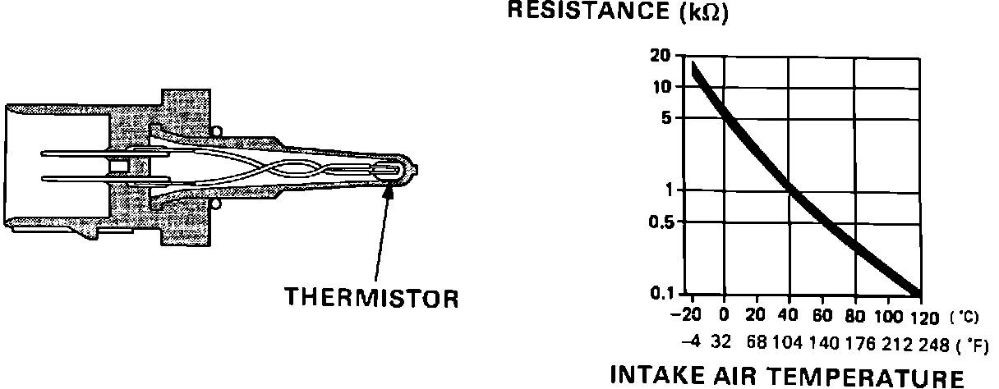

Air Temperature Sensor ( Ambient / Intake ): Description and Operation
Intake Air Temperature (IAT) Sensor Operation:

PURPOSE
The Intake Air Temperature (IAT) sensor measures air temperature inside the intake manifold.
CONSTRUCTION
The sensor consists of a negative coefficient thermistor bulb. As air temperature increases, sensor resistance decreases.
OPERATION
The Engine Control Module (ECM) receives sensor information as resistance to ground. Air temperature information is used along with information from other inputs to determine air density and adjust fuel delivery accordingly.